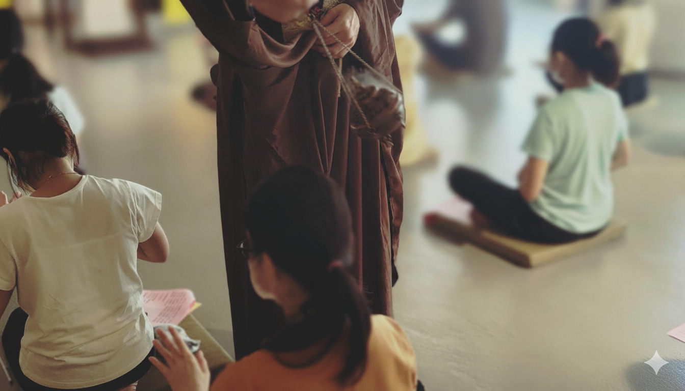

靈
元靈本源
Spirituality: That we inherit from the Source
元
自性本始
Oneness: Who we are from the Beginning
院
謐靜空間
Temple: Where we enjoy the Silence

靈元院緣起與法脈
奉靈山派創始神無極瑤池金母慈示，於台中設立專屬靈修之會靈聖地。以喚醒元神靈性為靈修根本，提供自修者一個心靈棲居靕修之所。靈元院規制與儀軌，依循靈山派無極法精神與無極瑤池金母降示之教導，向世人分享靈山派獨樹一幅的元神修煉奧秘、信仰神學與空間美學。

靕心修持的靈性空間美學
本院舉凡道場題名、布置擺設、芸術美學以及空間規劃，均依無極瑤池金母親降指示，及空間氣場流動而設計。形成一處隱匿於都市叢林中，寧靕且適於靈修人親近無極瑤池金母靈山法靕修的環境，使每一位進到靈元院的信眾皆能靕心，感受到空間所帶來的沉靕與安寧。
空無、幽玄、靕穆，一廂大隱隱於市，人神相會之靈山秘境。
With spacious emptiness, delicate subtleness and silent respectfulness,
it is a spiritual mountain, a secret space where man and divinity meet,
quietly hidden in a busy city.
With spacious emptiness, delicate subtleness and silent respectfulness,
it is a spiritual mountain, a secret space where man and divinity meet,
quietly hidden in a busy city.
靈元院目前於隱院靕修期間
目前靈元院處於隱院靕修階段，暫不對外開放參訪。
如有事務、法務或修行相關諮詢，敬請透過電話或 Telegram 聯繫。
TEL 0975-256579
Telegram 官方頻道
Telegram 聯繫帳號